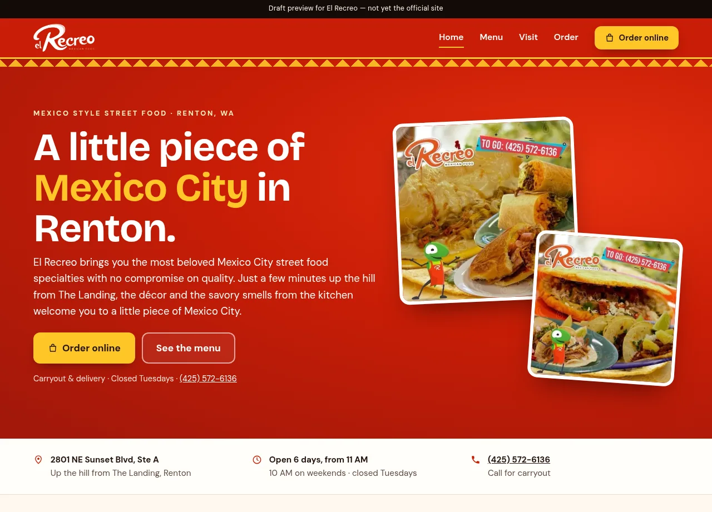

01 / Problem
The product challenge
A 174-item menu is hard to use on a phone if categories, hours, and the difference between pickup and delivery are buried. This preview is a pitch for that job. It does not replace the restaurant’s current site.
Restaurant / Menu / Online ordering
A mobile-first sample redesign for a Renton Mexican restaurant, with a 174-item menu, a clear split between pickup and delivery, and a direct handoff to the restaurant’s existing Menufy ordering.

The experience at a glance
The preview opens with the Renton location, hours, and two actions: order online or read the menu. Pickup and delivery stay named, and ordering continues in Menufy rather than a second checkout.
Visit the preview ↗This case study describes a draft pitch preview and the design decisions visible in that preview. It is not the business’s official site, and it does not claim the business hired this work or published it on their domain.
01 / Problem
A 174-item menu is hard to use on a phone if categories, hours, and the difference between pickup and delivery are buried. This preview is a pitch for that job. It does not replace the restaurant’s current site.
02 / Design intent
Help a visitor confirm this is the Renton restaurant, find a dish, and choose pickup or delivery without leaving the Menufy ordering the restaurant already uses.
03 / Key decisions
04 / Interaction & usability
Primary actions stay next to the hero. Location, a six-day schedule, the Tuesday closure, and the phone number are readable without opening the menu.
05 / Tools & skills
Responsive web design, information architecture, large-menu structure, mobile ordering paths, content hierarchy, and front-end implementation.
06 / What I’d improve next
A later version could group the menu the way people order—tacos, platters, family meals—while keeping the same handoff to Menufy.
Open the preview ↗Next project / Let’s work together